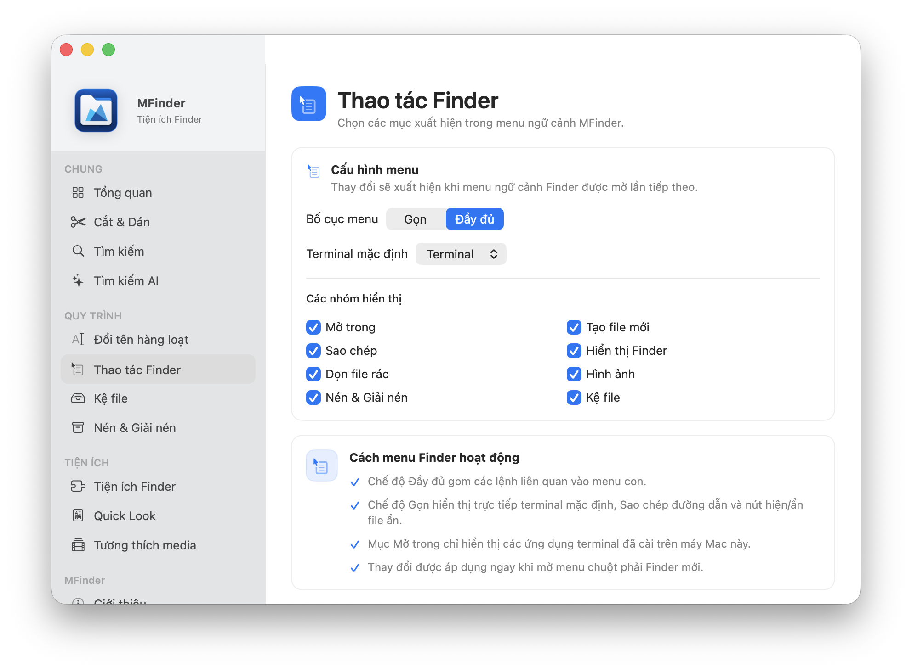
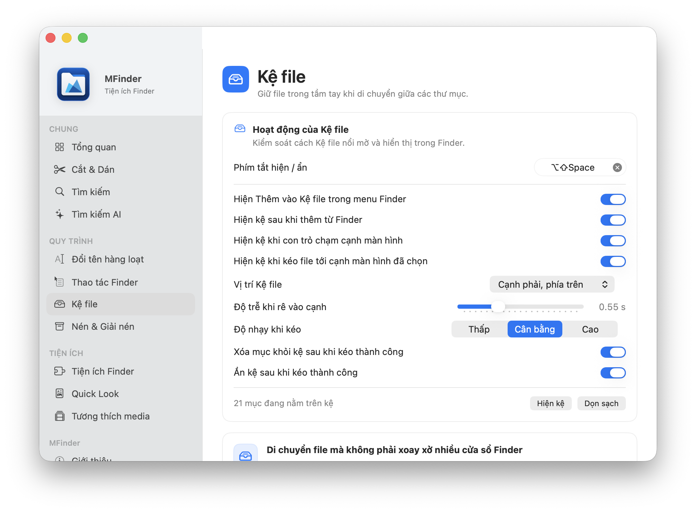
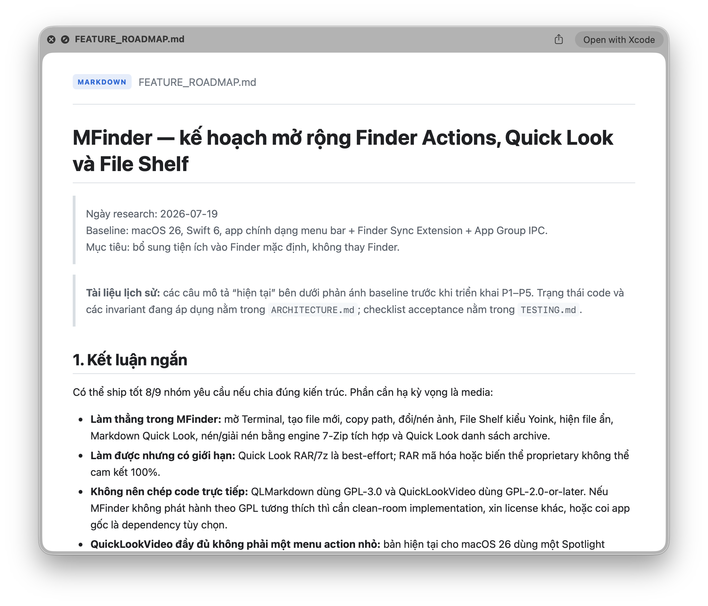
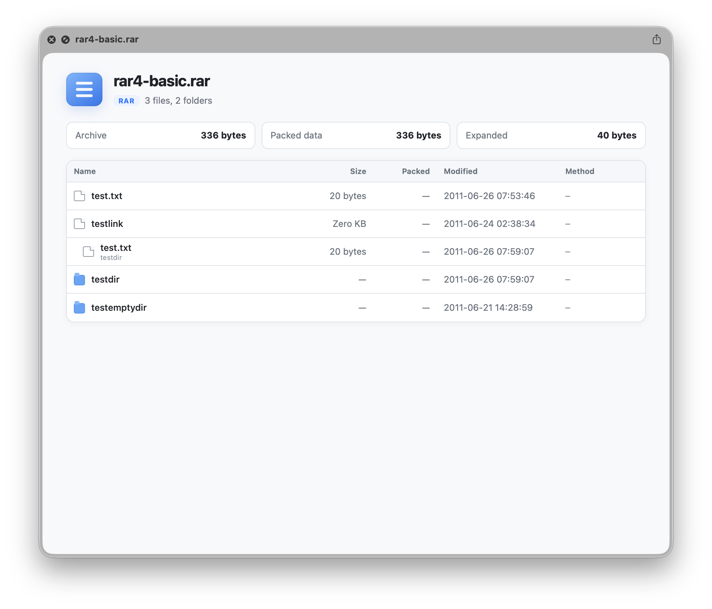
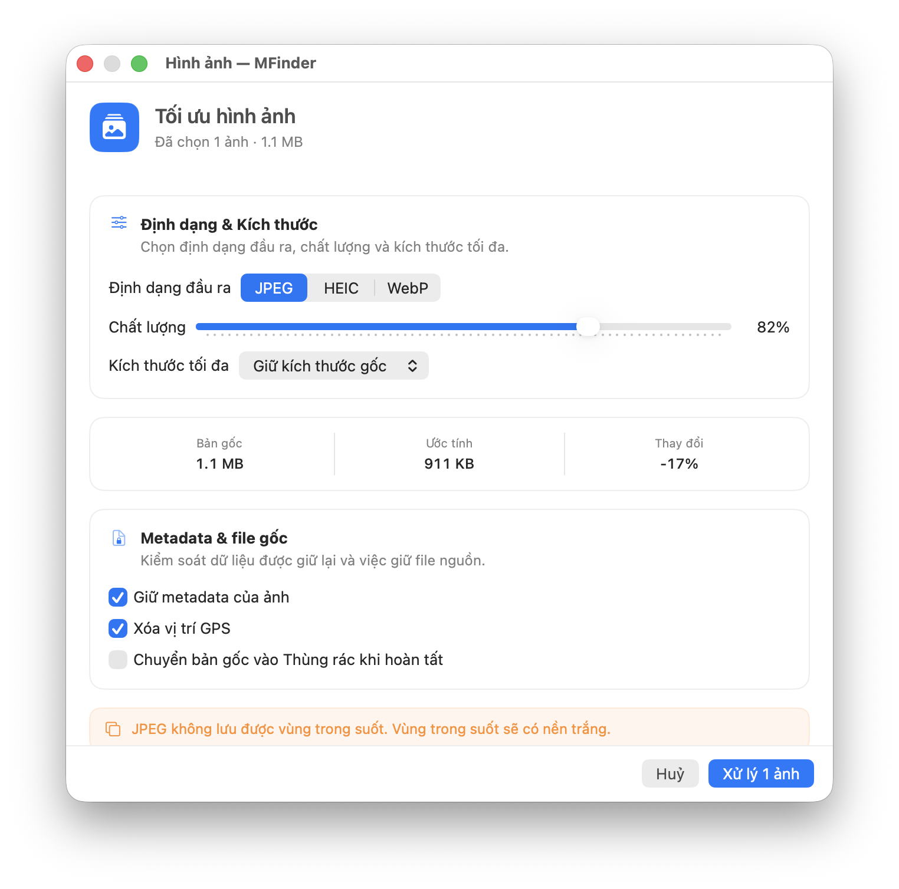

Tìm kiếm nhanh, cả bộ công cụ PDF, nén & giải nén, khóa thư mục, xem trước Markdown, tối ưu ảnh, "ngăn kéo" file và nhiều tiện ích khác — ngay trong Finder.
MFinder đặt những công cụ thường dùng nhất vào đúng ngữ cảnh — ngay trên file, thư mục và cửa sổ Finder đang mở.
Tìm kiếm hợp nhất
Tìm đúng file trước khi nhớ ra tên.
Nhấn ⌥Space từ bất kỳ đâu. MFinder kết hợp Spotlight, quét filesystem, cú pháp lọc nhanh và chỉ mục ngữ nghĩa để tìm cả những file Spotlight bỏ sót.
Tìm trong thư mục hiện tại hoặc toàn bộ máy Mac
Lọc theo loại, kích thước và thời gian
Quick Look hoặc kéo kết quả thẳng vào Finder
Tìm kiếm AI
Tìm theo ý nghĩa, không chỉ tên file.
Mô tả thứ bạn cần bằng ngôn ngữ tự nhiên. Khi Apple Intelligence khả dụng, MFinder hiểu ý định và xếp hạng nội dung phù hợp ngay trên máy.
Không gửi file lên cloud
Developer tools
Mở đúng thư mục trong Terminal.
Terminal, iTerm2, Alacritty, Warp, Ghostty và nhiều terminal khác. Path được truyền an toàn, kể cả khi có dấu cách hoặc ký tự đặc biệt.
›_cd ~/Projects/MFinder
Finder Actions
Một menu gọn. Đủ mọi việc.
Menu chuột phải tự thay đổi theo file đang chọn. Chỉ hiện những lệnh có ý nghĩa, không biến Finder thành một bảng điều khiển rối mắt.
Mở trong TerminalTạo file mớiSao chép đường dẫnHiện file ẩnDọn file rácTối ưu ảnh


File Shelf
Đặt file vào ngăn kéo. Đi tới nơi cần đến.
Một kệ tạm kiểu Yoink xuất hiện ở cạnh màn hình khi bạn kéo file tới. Giữ file trong tầm tay khi chuyển giữa nhiều thư mục, màn hình hoặc ứng dụng.
Chỉ mở khi có ngữ cảnh kéo file thật
Chọn vị trí trái/phải và vùng trên/giữa/dưới
Tự ẩn mượt sau khi kéo thành công
Quick Look, mở, hiện trong Finder và sao chép path
Xem trước & lưu trữ
Nhấn Space. Biết bên trong có gì.
Quick Look đúng nghĩa: xem trước mà không mở, không giải nén và không chạy nội dung không tin cậy.
Quick Look
Markdown đẹp. Archive rõ ràng.
Render .md, .mdx, .qmd, .rmd và liệt kê ZIP, 7Z, RAR, GZ, TAR.GZ ngay trong Finder.

Archive tích hợp
Không cần cài thêm Keka.
7-Zip được đóng gói và ký cùng MFinder. Nén ZIP/7Z, giải nén nhiều định dạng và kiểm soát rõ thư mục đích lẫn file trùng tên.

PDF Tools
Cả bộ công cụ PDF. Ngay trong Finder.
Chọn PDF trong Finder rồi mở PDF Tools. Kéo thả để thêm file hoặc cả thư mục, sắp xếp lại thứ tự, rồi tạo kết quả. Đầu ra luôn là file mới — bản gốc không bị đụng tới, PDF có mật khẩu chỉ được hỏi và giữ trong bộ nhớ.
Gộp PDFTách theo khoảng trangSắp xếp · xoay · xóa trangẢnh → PDFOCR nhận dạng chữGiảm dung lượngXuất trang thành ảnhTrích ảnh nhúngXóa metadata
Merge PDFsKéo để sắp xếp · thả thêm để bổ sung
1
2
3
Thả PDF / thư mục
Đầu ra là file mớiTạo kết quả
Hình ảnh
Nhẹ hơn, đúng định dạng hơn.
Nén, resize và chuyển đổi JPEG, HEIC, WebP theo lô. MFinder ước tính kích thước trước khi chạy, cho phép xóa GPS và chỉ chuyển file gốc vào Thùng rác sau khi output thành công.
JPEGHEICWebP

Những chi tiết tạo khác biệt
Công việc nhỏ, làm nhanh hơn mỗi ngày.
Khóa & mã hóa thư mục
Đặt mật khẩu MFinder riêng — lưu trong Keychain, khác mật khẩu đăng nhập máy — để khóa và mã hóa thư mục. Mở khóa cần xác thực.
Đồng bộ thư mục
Đồng bộ cặp thư mục theo thay đổi, theo lịch hằng ngày hoặc chạy thủ công từ menu chuột phải.
Tìm file trùng lặp
Quét file giống hệt để thu hồi dung lượng; ảnh gần giống được đánh dấu riêng để bạn tự xem lại.
Xem trước từ Dock
Rê chuột lên app trên Dock để xem trước cửa sổ của nó; chỉ chụp thumbnail khi preview đang hiện.
Nén & chuyển video
Chuyển định dạng và nén video ngay từ Finder, chọn mức nén phù hợp với nhu cầu.
Kết nối từ xa
Thêm máy chủ hoặc ổ đám mây để tải lên thẳng từ Finder; mật khẩu, khóa và token OAuth lưu trong Keychain.
Cut & Paste
Dùng ⌘X và ⌘V để di chuyển file như chỉnh sửa văn bản, vẫn hoàn tác bằng Finder.
Đổi tên hàng loạt
Find/Replace, Regex, tiền tố, hậu tố và đánh số với bản xem trước trước khi áp dụng.
Dọn file rác
Quét .DS_Store và các file rác đã biết mà không đi vào symlink hoặc app bundle.
Riêng tư theo thiết kế
File của bạn ở lại trên máy Mac.
Tìm kiếm, semantic index, đổi tên, nén và xử lý ảnh đều chạy cục bộ. MFinder không có tài khoản, không upload file và không phụ thuộc dịch vụ cloud để thực hiện công việc cốt lõi.
On-deviceDữ liệu và chỉ mục lưu trên máy.
Không ghi đè âm thầmKeep Both và staging an toàn cho file output.
Quick Look an toànChặn script, tài nguyên mạng và nội dung thực thi.
Yêu cầu hệ thống
Sẵn sàng cho macOS mới.
MFinder là ứng dụng menu bar thuần Swift, hỗ trợ cả Apple Silicon và Intel.
Hệ điều hànhmacOS 26 trở lên
Finder menuBật Finder Extension
PDF & OCRNhận dạng chữ tại máy
Khóa thư mụcMật khẩu riêng trong Keychain
Cut & Paste · Dock PreviewQuyền Trợ năng
AI SearchApple Intelligence · tùy chọn
Nén & giải nén7-Zip tích hợp sẵn
Câu hỏi thường gặp
Gọn gàng, minh bạch.
MFinder có thay thế Finder không?
Không. MFinder là companion app bổ sung menu, tìm kiếm, công cụ PDF, Quick Look và các workflow còn thiếu cho Finder mặc định.
MFinder có chỉnh sửa được PDF không?
Có. PDF Tools gộp, tách theo khoảng trang, sắp xếp/xoay/xóa trang, OCR nhận dạng chữ, giảm dung lượng, chuyển ảnh sang PDF và hơn thế. Đầu ra luôn là file mới, không ghi đè bản gốc.
Khóa thư mục có an toàn không?
Mật khẩu Secure Lock lưu trong Keychain và tách biệt mật khẩu đăng nhập máy. Mục được khóa sẽ mã hóa và bản gốc chuyển vào Thùng rác; mở khóa cần xác thực.
Có cần cài Keka hoặc 7-Zip riêng không?
Không. Engine 7-Zip đã được đóng gói và ký trong MFinder để nén và giải nén trực tiếp.
MFinder có gửi tên file hoặc nội dung lên server không?
Không. Các chức năng cốt lõi chạy tại máy; semantic search sử dụng embedding và chỉ mục cục bộ.
QuickLookVideo có được nhúng trong app không?
Không. MFinder chỉ phát hiện và hỗ trợ cấu hình QuickLookVideo đã cài vì kiến trúc Media Extension, kích thước codec và giấy phép của dự án này.